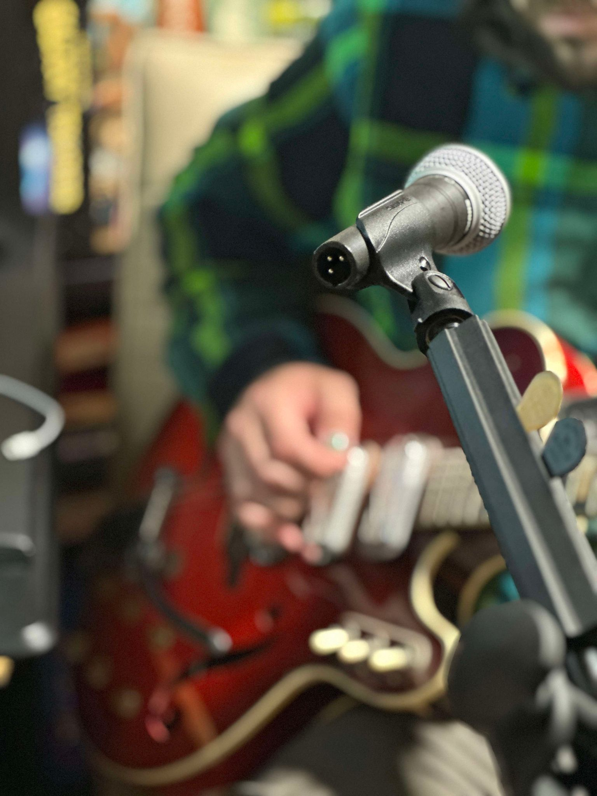
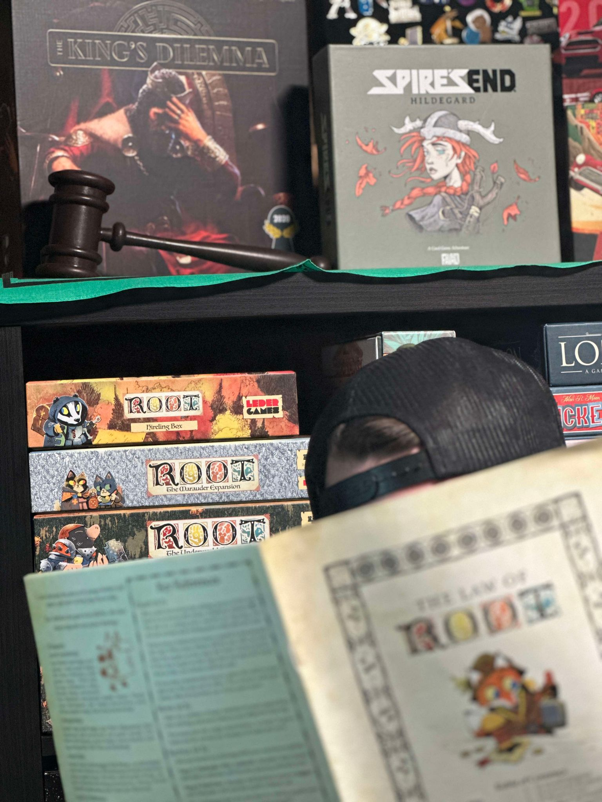
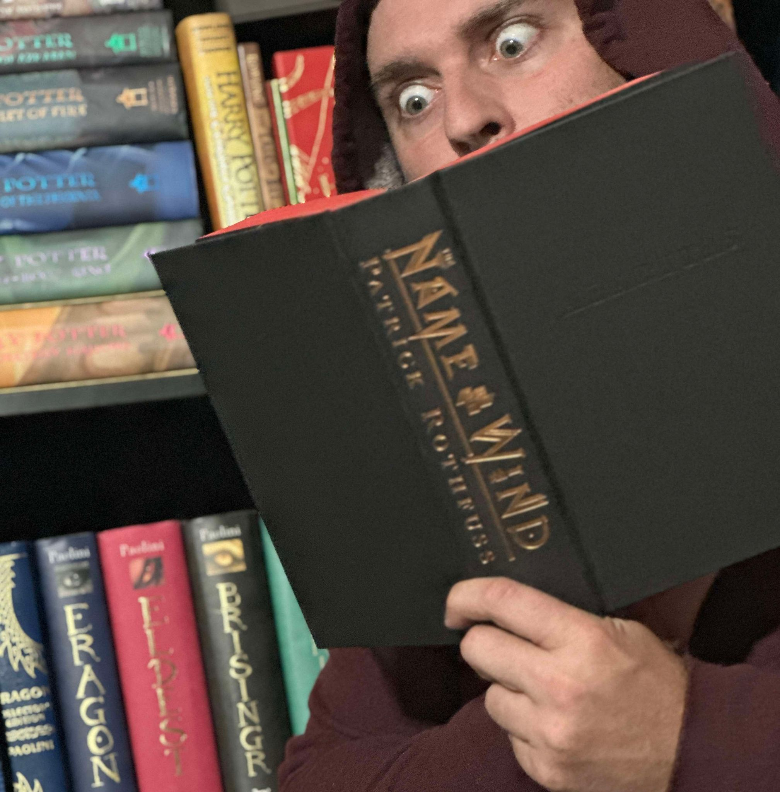

"You may have heard of me." - Kvothe, The Name of the Wind
My name is Zach Kahler. I am currently learning programming from STC, having enrolled in the Fall of 2024.
Originally hailing from Wisconsin, I moved to South Dakota in the winter of 2010 and haven't left for some reason. I have a wonderfully beautiful wife, Tonia, 3 pomeranians and a cat!
I cannot wait to learn all there is about programming in web design and app design, and I hope to eventually get a job where my family is free to live wherever we want and see the world!
Things I Do
I am a self proclaimed musician. I enjoy words; writing them, singing them, and reading them. Below I have chosen my three favorite hobbies! Huzzah!
Music! I'm always listening to music. Wherever I am there's either a melody in my head or a melody playing into my head. I am obbsessed with Green Day and most recently
the #1 Hot New Band, Hot Mulligan. I have created two bands you've probably never heard of that I am constantly writing music for:
The Last Good Thing & Technically Obese. And I hope to start a cover band in my free time called Blue Week!

Board Games! I absolutely adore board games. I've had a collection of almost 120 in my heyday. I try to keep a smaller collection nowadays and get rid of the fluff.
It's an ongoing struggle. I would much rather sit around with friends playing a tangible game at a table than play video games on a couch. My two favorite games
right now would have to be Root and Tokaido!

Books! I have been reading ever since I knew how! Introduced to the Redwall series in 5th grade it instilled in me a love for fantasy novels. From Jacques to Tolkein, Rowling to Paolini, Sanderson to Rothfuss,
Fantasy novels have bewitched me body and soul, and I love them.
